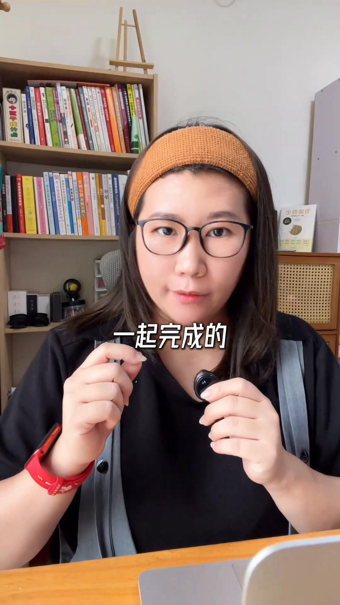

Facebook Reel｜用 AI 製作眼鏡廣告：人物一致性、分鏡與影片生成

圖片來源：A Designer 分享之 Facebook Reel 公開縮圖，貼文標示「花花AIGC研究室的作品」；為原影片預覽畫面，非自製示意圖。公開可見不代表已取得再利用授權。
來源與證據範圍
貼文原文：「3 分鐘帶你用 AI 做眼鏡廣告大片 #AIGC #AI影片 #AI廣告 #AI還可以這樣玩 【花花AIGC研究室的作品】」。本次從公開頁取得約 2 分 47 秒的影片影像和音訊，抽查畫面並以本機語音辨識輔助整理；辨識稿有錯字，不是人工逐字校訂稿。以下為講者示範和主張，不代表本次已操作或保證生成效果。
影片展示的流程
- 生成模特：把風格、年齡與五官、髮型髮色、服裝和飾品等寫入提示詞，必要時加入有權使用的參考圖。畫面顯示 Gemini 介面；完成後再做人物多視角圖，供後續維持角色一致性。
- 拆解與設計腳本：將參考影片素材交給 AI，請它分析分鏡、創意與拍攝特色；再提供人物多視角圖和產品圖，產生包含畫面、運鏡與音效的廣告分鏡腳本。應先確認參考素材的使用權，不等於可直接複製他人作品。
- 預覽與修改：講者提出先輸出 JSON 格式，再用生成圖片預覽分鏡，對不滿意之處修改；確認後再取得文字版本。影片未完整顯示可逐字複製的全部提示詞。
- 生成影片：畫面中可見 Seedance 2.0、多參考圖模式，講者示範上傳產品與模特圖片、選擇時長和畫面比例，再生成。講者表示此案例未逐鏡處理首尾幀，另提到可靈或 Veo 的首尾幀做法；這是其建議，不代表那些模型一定只能這樣使用，具體操作另待其後續教學或官方文件核對。
工具與限制
- Gemini：影片畫面可見 Gemini 標示，展示人物圖與腳本介面。Google 的官方圖片生成說明記載提示詞生成與圖片編輯，並說明模型、帳號、地區與使用條件會影響功能；官方文件目前的模型名稱不一定等於影片拍攝時的模型。
- Seedance 2.0：影片生成介面中可見該名稱；畫面不足以確認平台、當前價格或可用地區。本次未登入或實測，不能據此保證影片中的按鈕或功能現在仍相同。
- 角色一致性、速度、成本與「一個人完成」是講者的示範或看法，不是測試數據。商用前應檢查素材肖像、商標、音樂與生成服務條款；產品形狀、Logo、文字與眼鏡細節也需人工核對與修正。